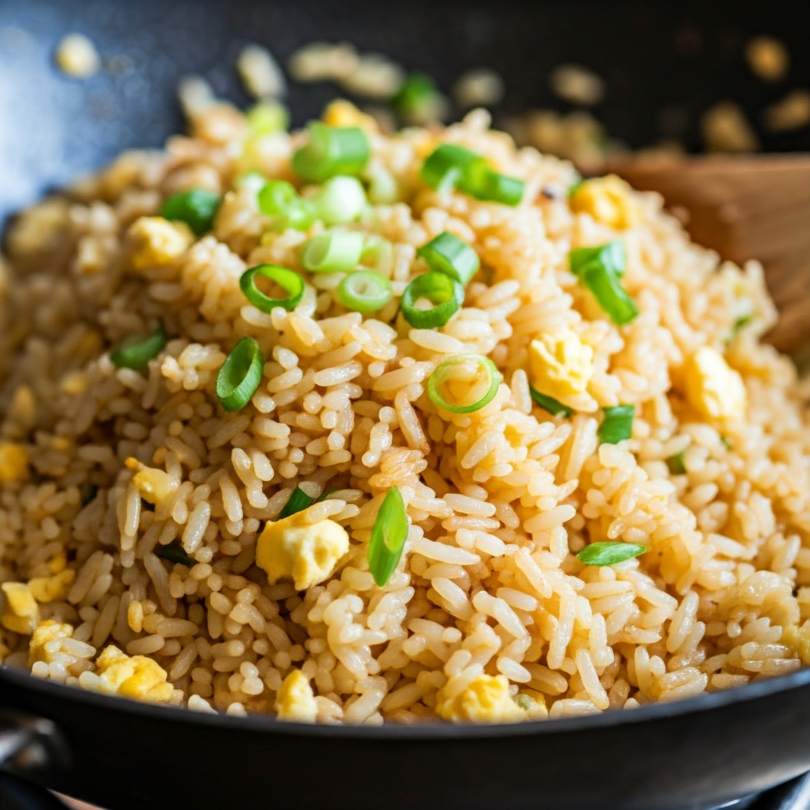

Fried rice
Price: 80 /-
Description: Fried rice is a savory, flavorful dish made by stir-frying cooked rice with various ingredients such as vegetables, proteins (like chicken, shrimp, or pork), and seasonings. It is typically prepared in a wok or large frying pan, where the rice is sautéed with ingredients like onions, garlic, peas, carrots, and sometimes eggs. The dish is seasoned with soy sauce, sesame oil, and other spices to enhance its taste. Fried rice is often a versatile and quick meal, making it a popular choice for using up leftover rice and customizing with different ingredients based on preference. Its slightly crispy texture and rich umami flavors make it a beloved comfort food across many cultures.
Order Now